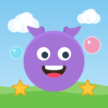
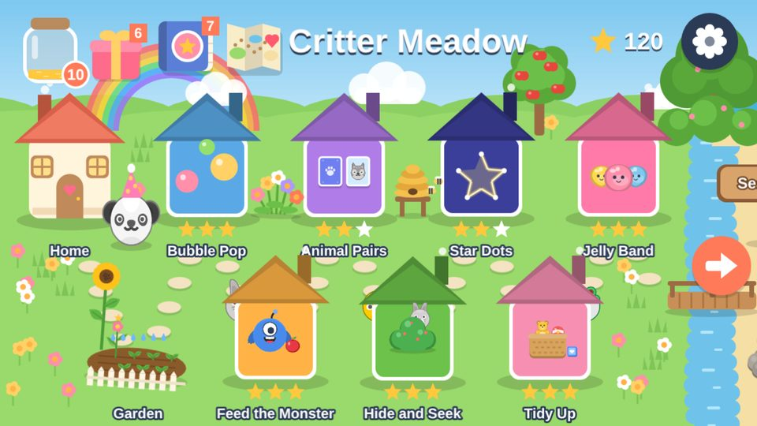
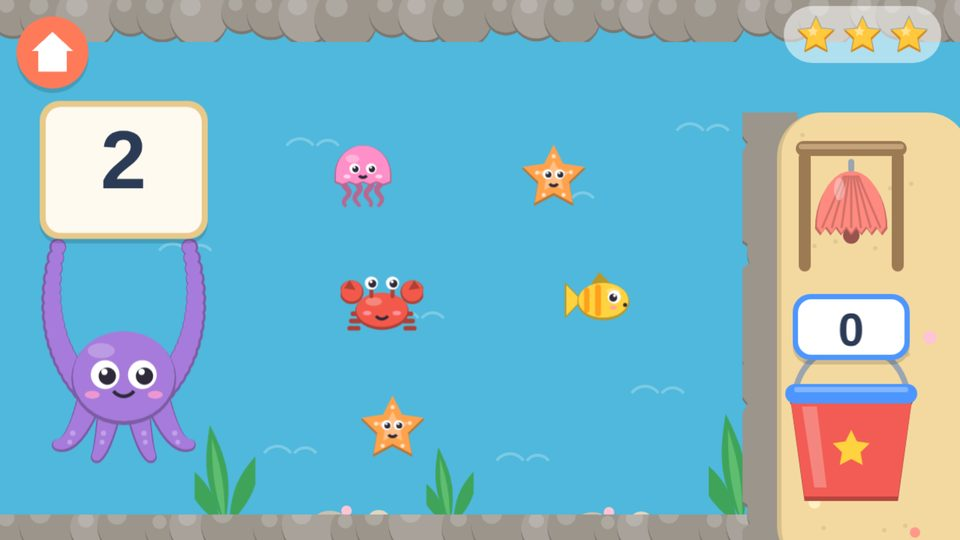
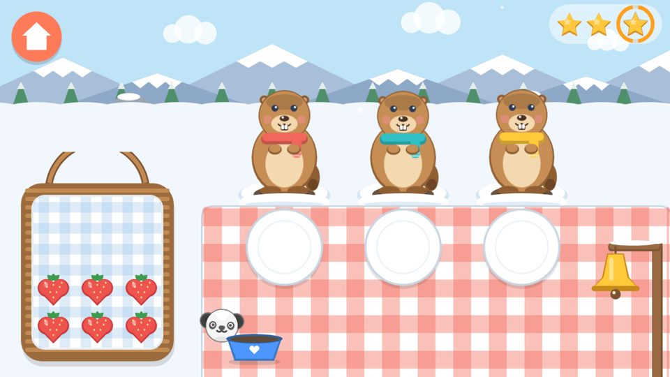
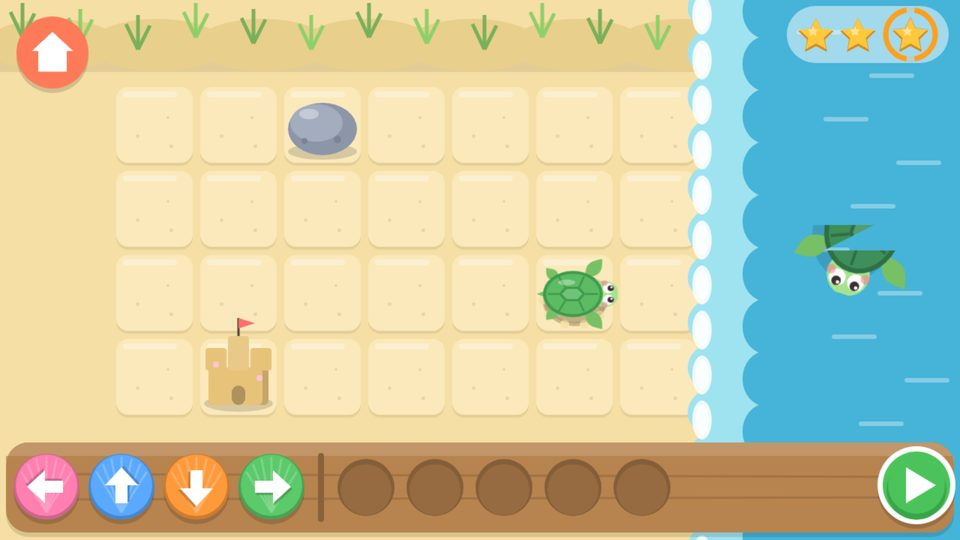
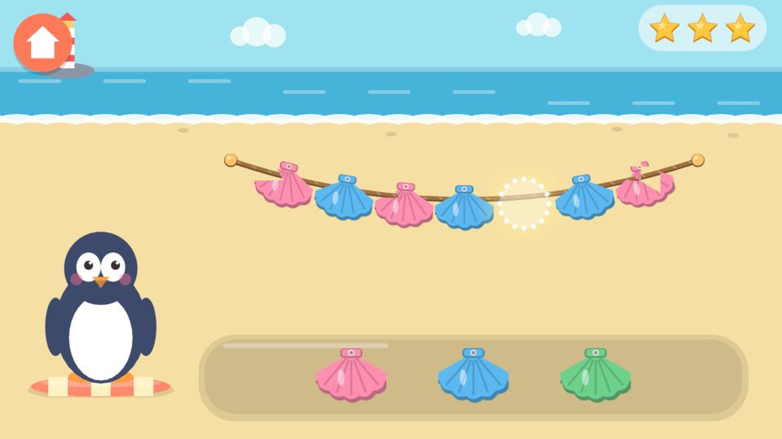
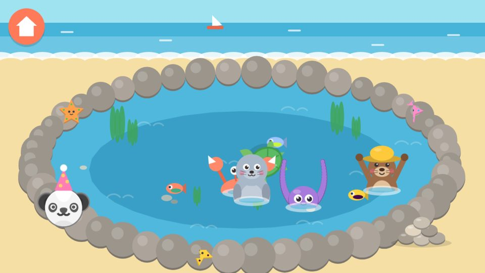
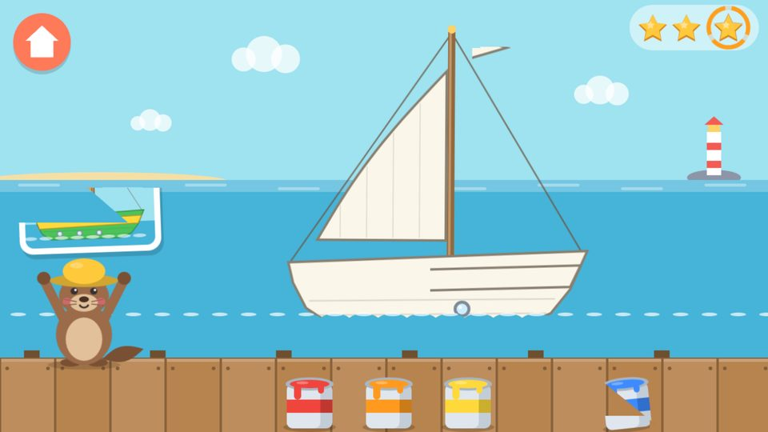

A growing world of gentle learning games for toddlers and kids aged 3 to 8.
Get it on Google PlayFree for Android phones and tablets or try it in your browser

Tap as many critters as the octopus's card shows, then ring the shell bell.

Share berries and cookies so every marmot gets the same, then cut pies into halves and quarters.

Lay arrow shells to guide the baby turtle to the sea: a first step into coding.

Finish the pattern of shells on the string, then watch a critter wear its new necklace.

Critters from the games come to live in each land's play corners and play with your buddy.

Paint the otter's boat to match its picture, or paint boats any way you like.